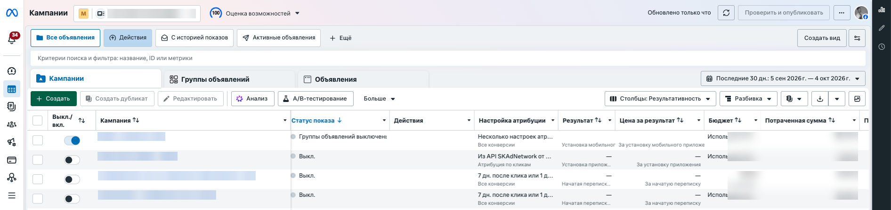
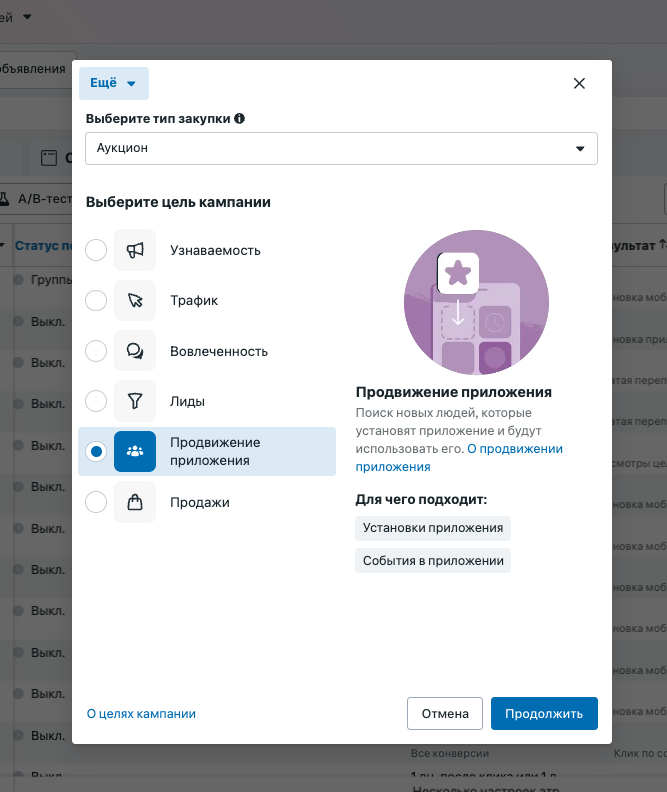
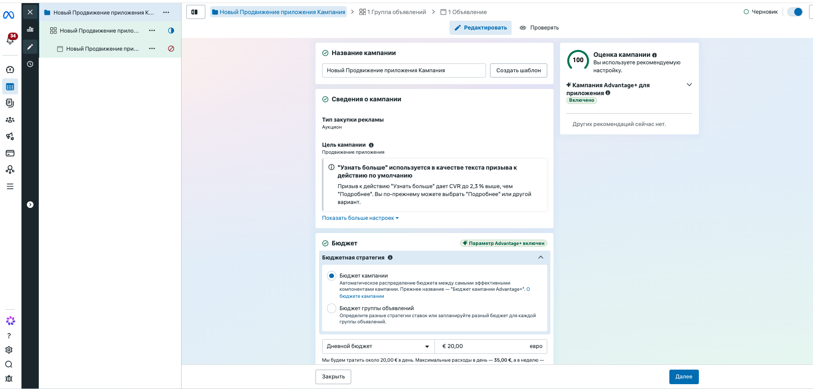
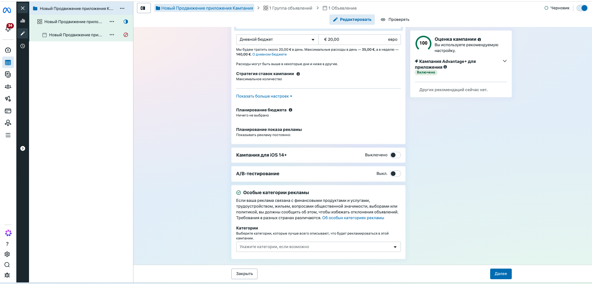

3.5 Ads Manager — кампания
Последний шаг: сама рекламная кампания в adsmanager.facebook.com — отдельный интерфейс от Business Settings (3.1) и Meta for Developers (3.2–3.3), который использует события из шага 3.4 для оптимизации. Ниже — реальный процесс создания кампании продвижения приложения.
Открой «Кампании» → нажми «Создать»
Кнопка «Создать» открывает выбор цели кампании. Ниже на этом же скрине — список уже существующих кампаний: по каждой видно статус показа, результат, цену за результат, бюджет и потраченную сумму (названия кампаний и суммы на скрине автора заблюрены — у тебя будут свои).

Кнопка «Создать»
Открывает выбор цели новой кампании — следующий шаг этой страницы.
Скрыто: названия кампаний
Это реальные кампании автора — названия не несут обучающей ценности, поэтому заблюрены. У тебя здесь будут собственные названия.
Скрыто: бюджет и расходы
Реальные суммы автора по его кампаниям — заблюрены, чтобы не путать с твоими значениями. Цифры здесь полностью зависят от твоего собственного бюджета.
Выбери цель «Продвижение приложения»
Среди целей кампании (Узнаваемость, Трафик, Вовлечённость, Лиды, Продвижение приложения, Продажи) — выбирай именно «Продвижение приложения». Справка Meta сразу поясняет: поиск новых людей, которые установят приложение и будут его использовать, подходит для установок приложения и событий в приложении.

Продвижение приложения
Единственная цель, которая умеет оптимизироваться под установки приложения и события внутри него — ровно то, что мы настраивали в Events Manager на шаге 3.4.
Справка Meta →Настрой кампанию и бюджет
Современный Ads Manager объединяет уровень кампании и бюджета в одном экране (режим «Advantage+ для приложения» включён по умолчанию и сам распределяет бюджет между самыми эффективными объявлениями). Здесь задаётся дневной или общий бюджет — в этом примере 20 € в день.

Цель кампании
Подтверждение выбранной на предыдущем шаге цели — «Продвижение приложения».
Дневной бюджет
20 € в день — Meta прогнозирует расход «около 20 € в день, максимум 35 € в день и 140 € в неделю» за счёт автоматического перераспределения внутри Advantage+.
Ниже на той же странице — дополнительные настройки: стратегия ставок, планирование показа, переключатель «Кампания для iOS 14+» (Aggregated Event Measurement — нужен, если ты таргетируешься на iOS-пользователей, не давших ATT-согласие) и декларация особых категорий рекламы (финансы, недвижимость, трудоустройство, выборы — для обычного продвижения приложения оставляешь пустым).
